Grafičko predstavljanje podataka
U prethodnom poglavlju smo se bavili prikupljanjem podataka i objašnjavali smo najbolje(najpravilnije) načine da se to odradi. U klasičnom statističkom istraživanju naredni korak je obrada tih podataka.
Statističari koriste grafičko predstavljanje da bi bolje razumeli podatke i lakše uočili pravilnosti po kojima se oni menjaju. Na primer, možemo odmah videti koji odgovor je više zastupljen u zavisnosti od pola ili uzrasta. Na taj način je mnogo preglednije i jednostavnije doneti zaključke o podacima nego kada su predstavljeni u brojevima i procentima.
Kružni dijagram(pie-chart)
Kružni dijagram je vrsta grafičkog predstavljanja u kom su vrednosti prikazane veličinama kružnih isečaka. Što znači, veći kružni isečak – veći je udeo te veličine u ukupnom broju. Na primer, u Evropi 53% stanovnika je ženskog roda. Na kružnom dijagramu bi to izgledalo ovako:
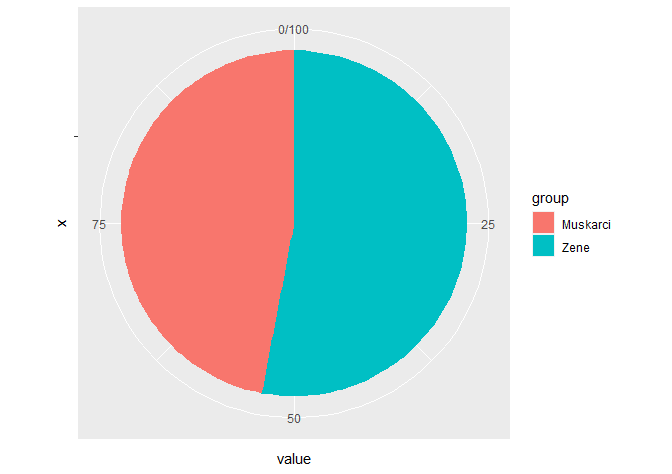
Primer 7.1 U jednoj stambenoj zgradi ima 8 garsonjera, 23 jednosobna, 10 dvosobnih i 9 trosobnih stanova. Nacrtati kružni dijagram(pie-chart) koji prikazuje strukturu stanova u toj zgradi.
Rešenje. Želimo da odredimo udeo(procenat) svake vrste stana. Zbog toga prvo računamo koliko ukupno ima stanova. \[S=8+23+10+9=50\] Udeo garsonjera izračunavamo na sledeći način
\(\frac{8}{50}=0.16\),odnosno 16%
Udeo jednsobnih stanova je:
\(\frac{23}{50}=0.46\),odnosno 46%
Udeo dvosobnih stanova je:
\(\frac{10}{50}=0.2\),odnosno 20%
Dok je udeo trosobnih je 100% - (16%+46%+20%) = 18%. Hajde da to prikažemo na dijagramu:
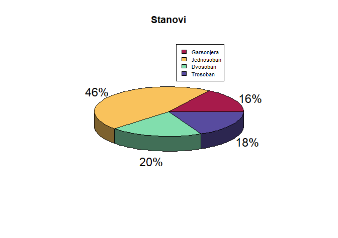
Primer 7.2 30 nasumično izabranih učenika je upitano koliko puta su posetili biblioteku prethode nedelje. Njihovi odgovori su dati u poljima tabele:
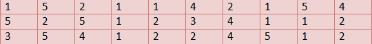
Analizirati odgovore i predstaviti ih kružnim dijagramom.
Rešenje. Za početak prebrojavamo koliko odgovra ima za svaku vrednost. 5 puta je biblioteku posetilo 6 učenika. 4 puta – 5 učenika, 3 puta – 2 učenika, 2 puta - 8 učenika i jednom je u biblioteku otišlo 9 učenika. Udeo u ukupnom broju ispitanih učenika za svaku vrednost možemo videti u narednoj tabeli:
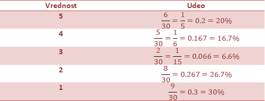
Na osnovu podataka, crtamo pie chart:
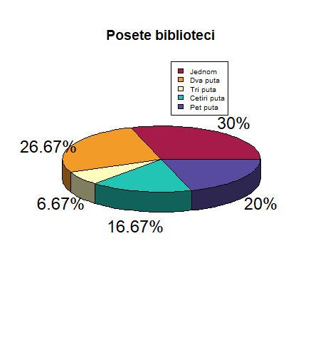
Primer 7.3 Nacrtan je kružni dijagram za broj glasova na izborima za predsednika razreda. Analizirajte ga i odgovorite na pitanja:
Ko je imao najviše glasova?
Ko je imao najmanje glasova?
Koji su učenici imali podjednak broj glasova?

Rešenje. a) Naviše glasova, sa udelom od 36% je imala Maja
Najmanje glasova, sa udelom od 9% je imao Aleksa
Podjednak broj glasova, sa udelom od 14% su imali Luka i Marija
Primer 7.4 Jedna porodica je mesec dana vodila evidenciju potrošnje mesečnih primanja. Kružnim dijagramom na slici je prikazana njihova evidencija:
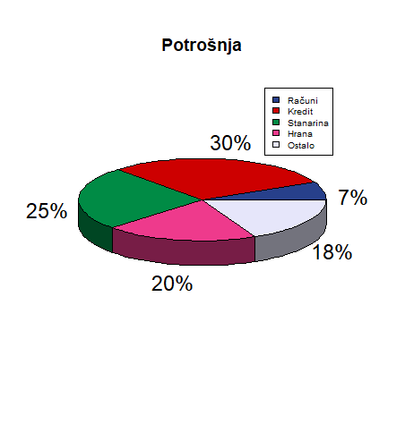
Protumačiti dijagram i odgovoriti na sledeća pitanja:
Na šta porodica potroši najveći udeo primanja?
Na šta porodica potroši najmanji udeo primanja?
Koliki udeo primanja zauzima hrana?
Rešenje.
Porodica najveći udeo(30%) troši na kredit.
Najmanji deo primanja(7%) troši na račune.
Porodica na hranu daje 20% svojih mesečnih primanja.
Histogram
Histrogram je vrsta grafičkog predstavljanja podataka u kojem je visina stubića određena vrednostima podataka koje prikazujemo. Kao i kod kružnog dijagrama – što je viši stubić, to ta veličina ima veći udeo u ukupnom broju. Na primer, predstavljamo histogramom iste podatke iz prvog primera o udelu ženskog i muškog pola u Evropi:
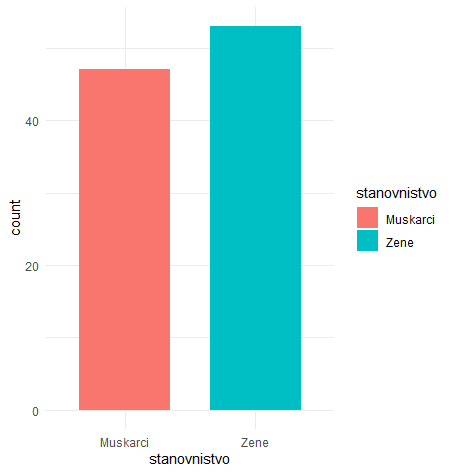
Primer 7.5 U jednom istraživanju, ispitano je 210 korisnika na temu „Koju marku telefona koristite?“ Odgovori su bili: 120 – iPhone, 60 – Nokia i 30 – Samsung. Date podatke predstaviti u obliku histograma.
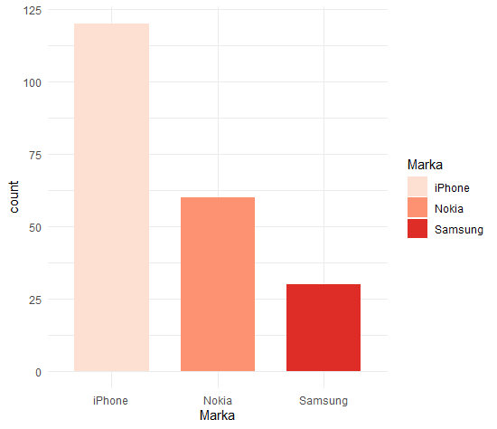
Primer 7.6 U fabrici automobila je praćena prodaja automobila po bojama tokom 6 meseci. Dobijeni su sledeći podaci: bela boja - 16, crvena - 20, plava -4, braon – 3, zelena – 4, crna - 15, ostale – 12. Predstaviti podatke u obliku histograma
Rešenje.
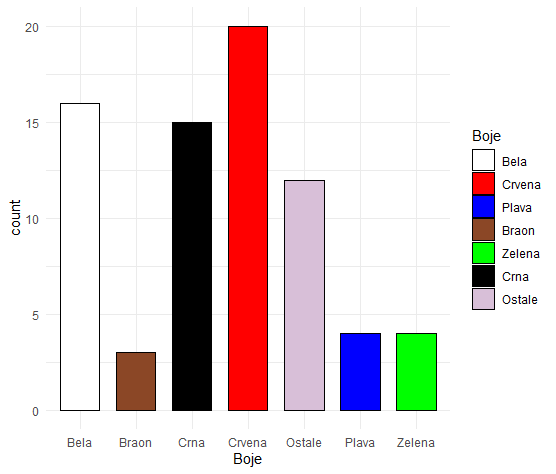
Primer 7.7 Na dijagramu je prikazana starost majki pri rađanju deteta prošle godine.
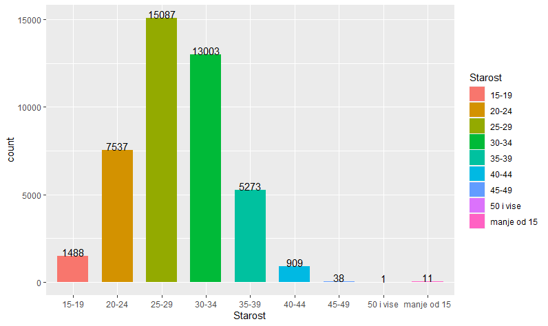
Analizirati histogram i odgovoriti na sledeća pitanja:
U kom godištu su majke naviše rađale decu?
U kom godištu su majke najmanje rađale decu?
Koliko je ukupno dece rođeno prošle godine?
Koliki je procenat majki mlađih od 30?
Rešenje.
- Najviše su rađale žene starosti od 25 do 29 godina.
- Žene od 50 godina i više su najmanje rađale decu (1 slučaj).
- Ukupno je rođeno
\[11+1488+7537+15087+13003+5273+909+38+1=43345\] - Računamo udeo koji čine majke mlađe od 30. Njih je ukupno: \[11+1488+7537+15087=24121\] Udeo je jednak:
\[\frac{24121}{43345} = 0.5565 \]
Odnosno 55.65%.
Primer 7.8 30 slučajno izabranih ljudi u šoping centru je pitano koliko poseduju kraditnih kartica. Odgovori su dati u poljima tabele:
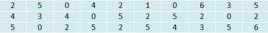
Nacrtati histogram vrednosti prikazanih u obliku udela
Rešenje. Napravićemo tabelu sa ukupnim brojevima po kategorijama i izračunati njihov udeo
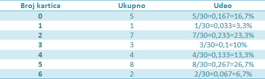
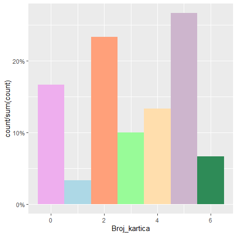